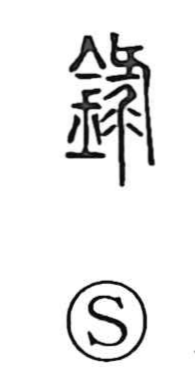

録

Uncategorized
Kun: | On: roku
record ・ to record ・ to write down ・ to engrave
Explanation
Originally written 錄, this is a phono-semantic character. The right-hand element depicts a drill boring into wood and the shavings that fly from the hole, evoking the act of cutting or incising; in this role it also provides the sound value, giving the on reading roku. With the metal radical added, the image shifts from cutting wood to engraving metal—especially bronze—so the character came to mean to engrave or inscribe, and by extension to write down and make a record.